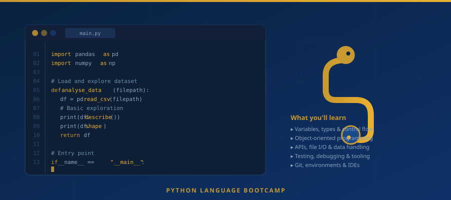
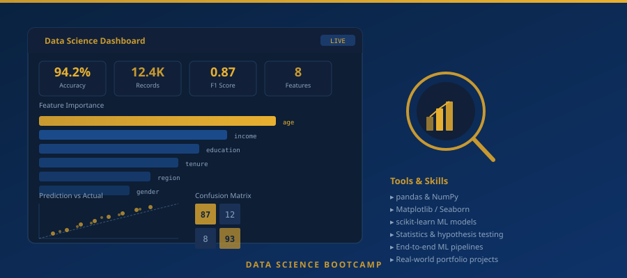
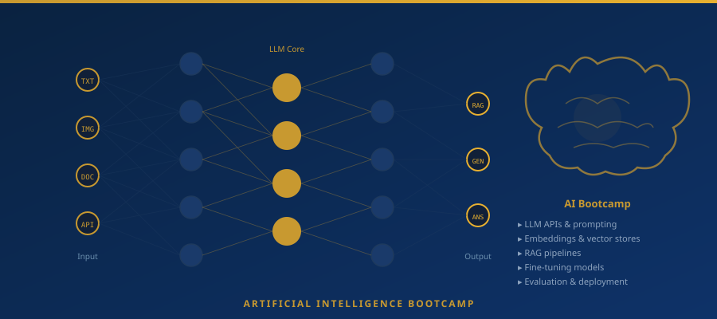
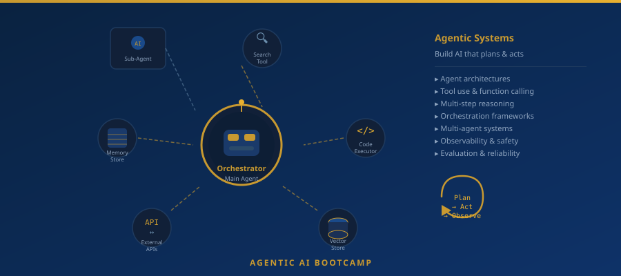

Our courses
Four intensive bootcamps: Python, Data Science, AI and Agentic AI. Take one or combine them to build a complete data and AI skill set.
Python Language
Our foundational programme for anyone new to programming or switching into tech. You’ll learn core Python, object-oriented design, working with APIs, testing and debugging, and how to use modern tooling (git, environments, IDEs). By the end you’ll be ready to move on to Data Science or AI, or to build scripts and small applications on your own.
-
Variables, types, control flow and functions
-
OOP, modules and packages
-
APIs, file I/O and data handling
-
Testing, debugging and best practices

Hands-on Python foundations for everything we teach.
Data Science
Statistics, visualisation and machine learning with Python. We use real datasets and tools like pandas, NumPy, Matplotlib/Seaborn and scikit-learn. You’ll build end-to-end pipelines: load data, explore it, model it and communicate results. Ideal after completing Python or if you already code and want to specialise in data.
-
Exploratory data analysis and visualisation
-
Statistics and hypothesis testing
-
Supervised and unsupervised ML with scikit-learn
-
Portfolio projects with real-world data

Work with real datasets and communicate insights clearly.
AI
Modern AI for builders: large language models, embeddings, retrieval-augmented generation (RAG) and fine-tuning. You’ll use popular APIs and open-source models, and learn how to design, prompt and evaluate AI applications. This course assumes solid Python; some exposure to data or ML is helpful but not required.
-
LLM APIs, prompting and evaluation
-
Embeddings and vector databases
-
RAG and document Q&A systems
-
Fine-tuning and deployment basics

Build and ship intelligent applications with modern AI stacks.
Agentic AI
The next step after classic AI: agents that use tools, plan and act. We cover agent architectures, tool use, orchestration (including frameworks and patterns), and how to build reliable, observable agent systems. Best taken after our AI course or with equivalent experience in LLMs and APIs.
-
Agent design and tool-calling
-
Orchestration and multi-step workflows
-
Observability, safety and evaluation
-
Hands-on agent projects

Build reliable agent systems with tool-calling and orchestration.
Course FAQs
What is the difference between the AI and Agentic AI courses?
The AI bootcamp teaches you how to build applications using large language models, prompting, RAG, embeddings and fine-tuning. The Agentic AI bootcamp goes further: it teaches you to build AI systems that can plan, use tools, and act autonomously across multi-step workflows. We recommend completing AI before Agentic AI.
What is Data Science and why should I learn it?
Data Science is the practice of extracting insights and building predictive models from data. It covers statistics, data analysis with Python (pandas, NumPy), visualisation, and machine learning with scikit-learn. It is one of the most in-demand skill sets in the UK, with average salaries exceeding £50,000.
What is Agentic AI?
Agentic AI refers to AI systems that can reason, plan, and take actions autonomously, using tools like web search, code execution, and APIs to complete multi-step tasks without constant human input. It is the next frontier beyond chatbots and single-turn AI, and is rapidly being adopted by enterprises across all industries.
Do I need a degree to enrol?
No degree is required. Our Python bootcamp is open to complete beginners. For the Data Science and AI courses, a working knowledge of Python is the main prerequisite. We assess each applicant individually and will advise you on the best starting point during your introductory call.
Can I take more than one course?
Yes, our four courses are designed to stack. Many students start with Python, progress to Data Science, then AI, and finally Agentic AI, building a complete and highly employable skill set. Each course also counts towards your qualification record independently.
What certificate will I receive?
Upon successful completion you will receive an NCFE-regulated qualification on the Regulated Qualifications Framework (RQF). This is a nationally recognised certificate, equivalent in standing to qualifications from colleges and universities, and trusted by UK employers.
Questions about which course to choose? We’re happy to help you pick the right track.